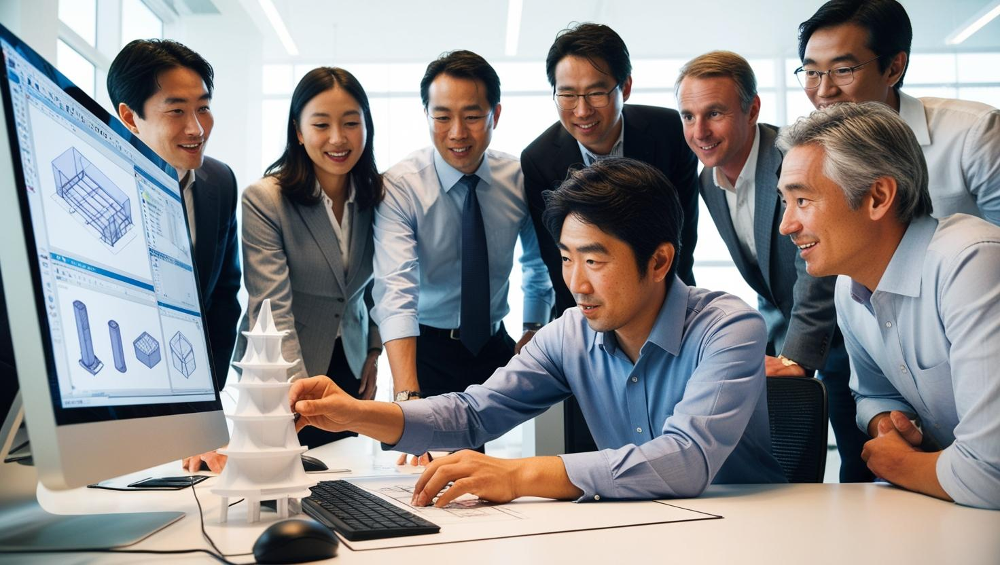

中学生のみなさん、こんにちは！
将来、環境にやさしいエネルギーを生み出したり、ものづくりの世界で活躍したいと思ったことはありませんか？ 大阪公立大学工業高等専門学校のエネルギー機械コースでは、そんな君たちの「やってみたい」を応援する学びがいっぱいです。
どんなことを学ぶの？
私たちの暮らしを支えるエネルギーや、身の回りにある様々な機械について深く学びます。
- エネルギーのひみつを探る！
- 太陽光や風力など、地球に優しい新しいエネルギーについて学びます。
- 発電所の仕組みや、私たちの家に電気が届くまでの流れも勉強します。
- 機械を動かす技術を学ぶ！
- 自動車やロボット、飛行機など、色々な機械がどうやって動いているのか、その仕組みを学びます。
- 自分たちで機械を設計したり、実際に動かすためのプログラムを作ったりもします。
- 環境を守る技術を学ぶ！
- 地球温暖化や大気汚染など、環境問題の解決に役立つ技術を学びます。
- クリーンなエネルギーの利用法や、省エネ技術についても深く学びます。
エネルギー機械コースの魅力
- 実践的な学び：座学だけでなく、実験や実習がたくさんあります。実際に手を動かしながら学ぶことで、理解が深まります。
- 専門の先生たち：それぞれの分野のプロフェッショナルである先生たちが、優しく、そして時には厳しく教えてくれます。
- 将来の可能性が広がる：卒業後は、電力会社や自動車メーカー、重工業など、様々な分野で活躍できます。大学への進学も可能です。
未来のエンジニアを目指そう！
エネルギー機械コースで学ぶことは、未来の社会をより良くしていくための大切な技術です。君たちのアイデアと努力で、新しいエネルギーを生み出したり、人々の暮らしを豊かにする機械を作り出すことができるかもしれません。
少しでも興味を持ったら、ぜひオープンキャンパスに来てみてください！
もっと詳しく知りたい君へ
- 大阪公立大学工業高等専門学校 公式サイト
- 大阪公立大学工業高等専門学校 エネルギー機械コース 紹介ページ (仮のリンクです。実際のページに合わせてください。)